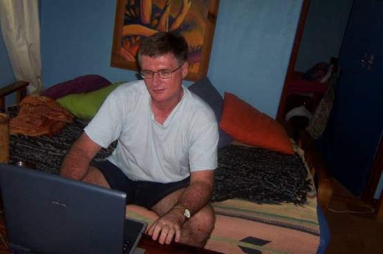
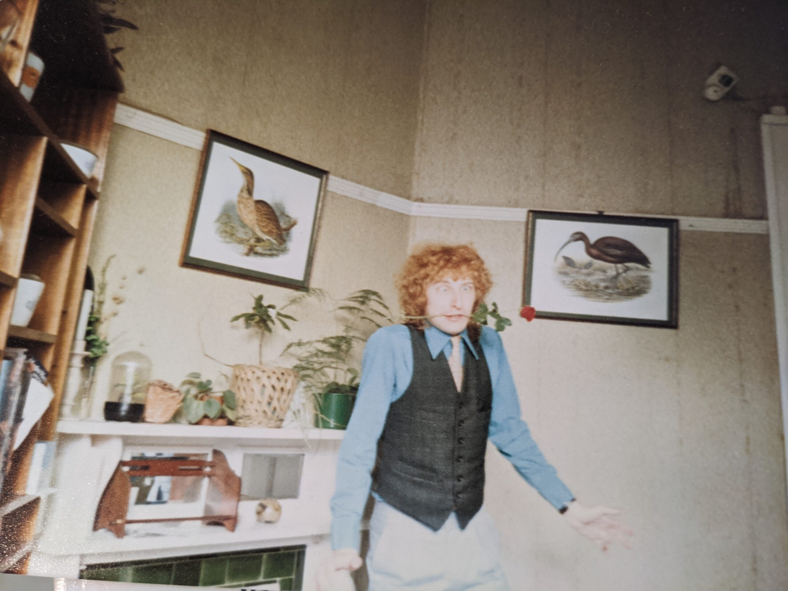

Building the Rome metro is an arduous process. Every few metres uncovers a hidden archaeological gem. Renovating Troppo is the same. Antonios Sarhanis has been hard at work helping us out here at Troppo taking over from the long suffering Jacques Chester who was one of the great contributors to Australian blogging even after he left Australia's balmy shores many years ago to join a cult (The United States). Thanks immensely Jacques.
In his exertions Antonios has uncovered this "About" page and let us know that it needs updating. But that's not how Rome was built. It wasn't built in a day and it wasn't updated. It was just added to, layer upon layer. Who knew this page existed? Certainly not me and I may have written it — though I think Ken did.
Anyway Antonios asked if we should update or delete the page as the photographs don't even show up. No. No. A thousand times "no" I warned him as he gradually realised the authoritarian madness he'd inadvertently got himself caught up in — and why Jacques had to depart. And all for what? Imaginary vehicles apparently. Anyway, I recovered the pics as best I could and so here is the first "About" page ever to grace any internet site since Abe Lincoln's magisterial "About" page at Gettysburg.
About Troppo

Ken Parish
Nicholas Gruen (apparently)Club Troppo is a group blog that has existed in various guises since 2003. Troppo has numerous contributors who post with varying frequency on an eclectic range of topics, including politics, law, economics, life, philosophy, sport and the arts. From a contributor viewpoint, Troppo is a fairly anarchic collective.
We're also very receptive to additional/guest contributors who can add an extra dimension to the Troppo team. Troppo has fostered several new bloggers who have gone on and branched out to become "stellar" blogosphere talents. The advantage of blogging at a group blog like Troppo is that you are under no pressure to post frequently, so it's ideal for busy people who just don't have the time to maintain a solo blog. If you're opinionated but personable and reckon you can write a bit, feel free to contact us.
Troppo contributors often tend towards an "essay blogging" style rather than just short, link-based posts. Maybe that just means some of us are verbose, but we like to think that we're exploring and analysing issues in greater depth than is usually possible in the mainstream media. We also tend towards a default attitude of scepticism towards rigid political ideologies (and ideologues) of both right and left.
From a reader's viewpoint, we hope you'll experience Troppo as a sort of cyber-coffee salon, where bloggers and readers muse about the issues of the day in an atmosphere of stimulating, mutually respectful civility. We encourage robust debate as long as it is conducted civilly. We reserve the right to delete any comments that offend our subjective norms of civility (although we've very seldom needed to do so). In this respect, Troppo is a benign dictatorship, and no correspondence will be entered regarding any comments we choose to delete. We have discovered from hard experience that constructive debate can easily be derailed by ad hominem abuse. At the same time, we encourage diversity of opinion, and enjoy testing our ideas and arguments against readers who think differently. We don't want Troppo to become like some other Australian blogs which seem to use censorship to maintain a "group think" mentality where those who disagree with the dominant group are bullied. Feel free to disagree, but keep it civil and play the argument not the person.
The "Troppo" in the title refers to the fact that this blog was commenced by Ken Parish, a recently retired academic lawyer who lived in Darwin in Australia's tropics for almost 40 years before moving to Melbourne in 2019, where he now calls St Kilda home, living with wife Jen and daughter Jessica. The animated armadillo in the banner flows from a previous incarnation of the blog when it was called "Troppo Armadillo". The armadillo motif in turn springs from a quote by American op-ed writer and humourist Jim Hightower:
There's nothing in the middle of the road but a yellow line and dead armadillos.
Ken Parish and Nicholas Gruen both see themselves in a broad sense as political centrists, although it shouldn't be assumed that this self-labelling necessarily describes any other Troppo contributors.